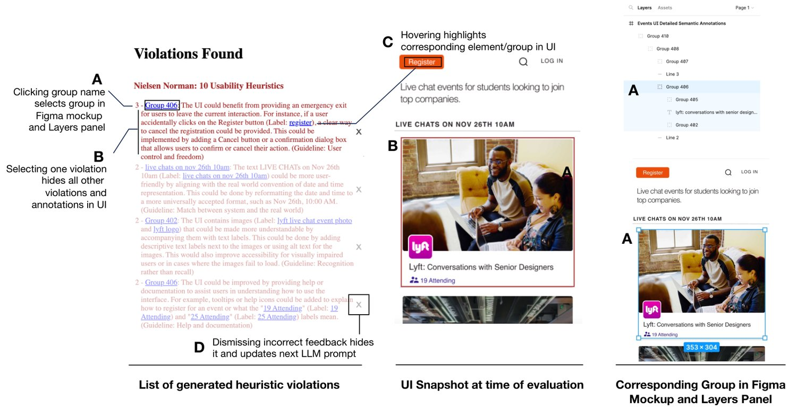
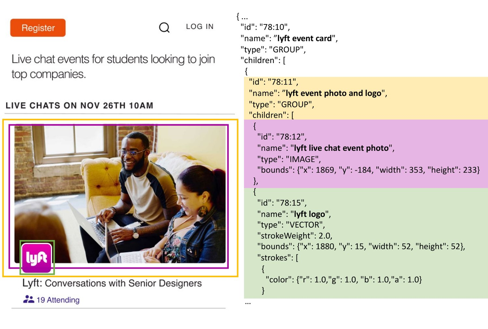

3. System Details
In this section, we describe the set of design goals for an automatic LLM-driven heuristic evaluation tool, how they are realized in our system, the underlying implementation, techniques to improve the LLM’s performance, and explorations of alternative prompt designs and various LLM models for this task.
3.1. Design Goals
Based on design principles and expected LLM behavior, we came up with a set of goals that lay out what an automatic LLM-based heuristic evaluation tool should be able to do. The goals are as follows:
- (1)
The tool should be able to accommodate arbitrary UI prototypes; designers should be able to use this tool to perform heuristic evaluations on their mockups and identify potential issues, before implementation.
- (2)
The tool should be heuristic-agnostic, so different guidelines or heuristics can be used.
- (3)
The guideline violations detected by the LLM should be presented in a way that adheres to the principles of effective feedback (Sadler, 1989).
- (4)
The LLM generated feedback should be presented in the context of the critiqued design. This is to narrow the gulf of evaluation, making it easier for designers to interpret the feedback.
- (5)
Finally, in case the LLM makes a mistake, the designer should be able to hide feedback they find unhelpful. This data should also be sent to the LLM to improve its prediction accuracy.
3.2. Design Walkthrough

We built our tool as a plugin for Figma, enabling designers to evaluate any Figma mockup (Goal 1). Figure 1 illustrates this plugin’s step-by-step usage with interface screenshots. The designer first prototypes their UI in Figma and runs the plugin (Figure 1 Box A). Due to context window limitations, the plugin only evaluates a single UI screen at a time. Furthermore, it only assesses static mockups, as evaluation of interactive mockups may require multiple screens as input or more complex UI representations, which could exceed the LLM’s context limit. After starting the plugin, it opens up a page to select guidelines to use for heuristic evaluation (Box B). Designers can select from a set of well-known guidelines, like Nielsen’s 10 Usability Heuristics, or enter any list of heuristics they would like to use (Goal 2). They can also select more than one set of guidelines for the evaluation.
Once the LLM completes the heuristic evaluation, text explanations of all violations found and a UI screenshot are rendered back to the designer (Figure 1 Box C). This “UI Snapshot” serves as a reference to the state of the mockup at the time of evaluation, in case the designer makes any changes based on the evaluation results. Each violation explanation contains the name of the violated guideline and is phrased as constructive feedback, following the guidelines set by Sadler et al. (Sadler, 1989) (Goal 3). According to Sadler, effective feedback is specific and relevant, highlighting the performance gap and providing actionable guidance for improvement. To accomplish this, the feedback must include these three things: 1) the expected standard, 2) the gap between the quality of work and the standard, and 3) what needs to be done to close this gap. Our design feedback adheres to Sadler’s principles and starts by stating the standard set by the guideline, followed by the issue with the current design (the gap between the design and expected standard), and concludes with advice on fixing the issue. Figure 9 provides four examples of these explanations.
The plugin also includes several features that help designers contextualize the text feedback with corresponding UI elements. (Goal 4). Figure 2 illustrates these features. Selecting a violation fades the other suggestions and draws a box around the relevant group or element in the screenshot, as shown in Figure 2 (B). In addition, all UI elements and groups mentioned are rendered as links. Hovering over a link draws a box over the corresponding group or element in the screenshot (C), and clicking on the link selects the item in the Figma mockup and Layers panel (A), streamlining the editing process. Finally, to address Goal 5, if the designer finds a suggestion incorrect or unhelpful, they can click on its ‘X’ icon to hide it (D). Hiding the violation sends feedback to the LLM for subsequent evaluation rounds so this violation will not be shown again.
After the designer revises their mockup based on LLM feedback, they can rerun the evaluation to generate new suggestions. This usage is intended to match the iterative feedback and revision process during design. The plugin uses the information from the Layers panel of Figma to create the text-based representation of the mockup (discussed in more detail in the next section). Hence, it relies on accurate names for groups in the Layers panel to convey semantic information about the UI; for instance, the group containing icons in the navbar should be named “navbar”. Designers must manually add these names, so they are often missing. To address this, we implemented an auxiliary label generation feature that can be run before evaluation to generate group names automatically (based on their contents).
3.3. Implementation
![A flow chart illustrating the system design of the plugin. Source design is labeled 1 and Heuristics is labeled 2. There is an arrow from Source Design to Generate Condensed JSON Representation for LLM (labeled 3). Generate Condensed JSON Representation for LLM and Heuristics both point to LLM Queries for Evaluation and Rephrasing (labeled 4), which points to Parse Result (5), which points to Generate Representation for Designer (6). Generate Representation for Designer points to LLLM Queries for Evaluation and Rephrasing going through a box label 7 saying Feedback from Designer](figures/systemdiagramrevised.jpg)

We implemented this plugin in Typescript using the Figma Plugin API. The plugin makes an API request to OpenAI’s GPT-4 for LLM queries. Since LLMs can only accept text as input, the plugin takes in a JSON representation of the UI. While multi-modal models exist that could take in both the UI screenshot and guidelines text (e.g., (Liu et al., 2023b)), we found that its performance was considerably worse than GPT-4’s for this task (at the time).
Our JSON format captures the DOM (Document Object Model) structure of the UI mockup, and is similar in structure and content to the HTML-based representation used by (Wang et al., 2023) that performed well on UI-related tasks. Figure 4 contains an example portion of a UI JSON with corresponding groups and elements marked in the UI screenshot. The tree structure is informative of the overall organization of the UI, with UI elements (buttons, icons, etc.) as leaves and groups (of elements and/or smaller groups) as intermediate nodes. Each node in this JSON tree contains semantic information (text labels, element or group names, and element type) and visual data (x,y-position of the top left corner, height, width, color, opacity, background color, font, etc.) of its element or group. Hence, this JSON representation captures both semantic and visual features of the UI, which supports the evaluation of various aspects of the design and differentiates it from the representation used by (Wang et al., 2023) that captures only semantic information. This JSON representation is constructed from the data (e.g., group/element names) and grouping structure found in the Layers panel of Figma, which are editable by designers.
Figure 3 shows the core system design of the plugin. Due to the context window limits of GPT-4, we remove all unnecessary or redundant information and condense verbose details into a concise JSON structure (Box 3). This condensed JSON representation and guideline text are combined into a prompt sent to the LLM. After the LLM returns the identified guideline violations, another query is sent to the LLM to convert these violations into constructive advice (Box 4). This chain of prompts is illustrated in Figure 12 (Appendix), which describes the components of each prompt. The LLM response is parsed by the TypeScript code (Box 5) and rendered into an interpretable format for designers (Box 6). Figma IDs for each element and group are stored internally, which supports selection of elements or groups in the mockup via links (Figure 2, A) and quick access to their layout information. Layout information is used to draw boxes around elements and groups in the screenshot, as shown in Figure 2 (B and C). Finally, unhelpful suggestions that were dismissed by the designer are incorporated into the prompt for the next round of evaluation (Box 7), if there is room in the context window. The label generation feature is also executed via an LLM call, with the prompt containing JSON data of all unnamed groups and instructions for the LLM to create a descriptive label for each JSON based on its contents.
3.4. Improving LLM Performance
We chose the most advanced GPT version available (GPT-4), as it has the strongest reasoning abilities (OpenAI, 2023). However, GPT-4 does not support fine-tuning and has a context window limit of 8.1k tokens. This context window limit leaves inadequate room for few-shot and “chain-of-thought” (Wei et al., 2023) examples because each Figma UI JSON requires around 3-5k tokens, the guidelines text take up to 2k tokens, and few-shot and chain-of-thought examples both require the corresponding UI JSONs. Due to these limitations, our method for improving GPT-4’s performance entailed adding explicit instructions in the prompt to avoid common mistakes, as shown in Figure 12 (Appendix). Finally, we set the temperature to 0 to ensure GPT-4 returns the most probable violations.
The remaining space in the context window was allocated to suggestions that were dismissed (hidden) by designers. Incorporating this feedback targets areas of poor performance specific to the UI being evaluated and also adapts GPT-4’s feedback to the designer’s preferences. Since the UI JSON is already provided in the prompt, this feedback does not require much space. However, the UI may have changed due to edits, so JSONs of the groups/elements for a dismissed violation are still included, but they are considerably smaller than the entire UI JSON. These items are incorporated in the conversation history of the next prompt, as examples of inaccurate suggestions (see Figure 12 in the Appendix). In addition, we ask GPT-4 to reflect on why it was wrong and add this prompt and its response to the conversation history. This “self-reflection” has been shown to improve LLM performance (Shinn et al., 2023).
3.5. Exploration of Alternative Prompt Compositions
| Prompt Condition |
Total
Violations |
Helpful Violations |
|---|---|---|
| Complete (Plugin) | 63 | 38 |
| One Call | 62 | 31 |
| No Heuristics | 50 | 14 |
| General UI Feedback | 57 | 24 |
| LLM |
Total
Violations |
Helpful Violations |
|---|---|---|
| GPT-4 (Plugin) | 63 | 38 |
| GPT-3.5-16k | 228 | 23 |
| Claude 2 | 7 | 1 |
| PaLM 2 | 12 | 3 |
We investigate how different prompt components influence GPT-4’s output to identify potential opportunities for simplifying our complex prompt. For our analysis, we used 12 distinct mockups of mobile UIs taken from the Figma community. Furthermore, we used three sets of heuristics covering different aspects of UI design: Nielsen’s 10 Usability Heuristics (Nielsen, 1992), Luther et al.’s visual design principles compiled in “CrowdCrit” (Luther et al., 2014), and Duan et al.’s 5 semantic grouping guidelines (Duan et al., 2023). These 12 UIs and three sets of heuristics were consistently used in all subsequent analyses and studies in this paper, except for the Performance Study, which used a larger set of 51 UIs. We query the LLM with prompt variations and then compute the total number of reported violations and the number of helpful violations (based on the authors’ judgment), and we also qualitatively examine the violations. We consider a violation to be helpful if it is both accurate and would lead to an improvement in the design. Table 1 (“Prompt Condition”) compares violation counts for each condition with the complete prompt chain.
3.5.1. One Call
Our prompt chain makes two LLM calls – one to carry out the heuristic evaluation and the other to rephrase results into constructive feedback (Appendix Figure 12). We examine the effects of combining these two into a single call, as this would reduce latency. Quantitatively, the total number of violations remained similar, but the number of helpful violations was lower. However, more importantly, the output was never formatted correctly with one call, and the format also varied across different calls. Furthermore, GPT-4 sometimes omitted other important details, such as how to fix the violation. Since correct output formatting is necessary for the plugin to parse and render the violations, combining the two calls is not feasible.
3.5.2. No Heuristics
The detailed heuristics text occupies a lot of space in the LLM’s context window, so we examined the performance without including them in the prompt. We edited prompts to look for “visual design issues”, “usability issues”, or “semantic group issues” instead of passing in the heuristics.
Table 1 (top) shows that GPT-4 provided fewer suggestions total (50 vs. 63) and considerably fewer helpful suggestions when heuristics were not included in the prompt (14 vs. 38). Qualitatively, the suggestions for Crowdcrit and Nielsen were similar to those from the complete prompt, though the suggestions were more thorough when the Crowdcrit heuristics were included. However, for Semantic Grouping, not passing in the heuristics resulted in only violations that concerned the semantic relatedness of group members, whereas passing in the guidelines resulted in a more diverse set of issues found. We conclude that while the LLM could give plausible UI feedback without passing in heuristics, the quality of the suggestions is worse.
3.5.3. General UI Feedback
Finally, we investigate how GPT-4 responds without specific guidance when prompted for general UI feedback. We removed all mentions of “guidelines” in the prompt and replaced “violations” with “feedback.” Quantitatively, the performance for this condition was worse. Qualitatively, GPT-4 still carried out heuristic evaluation to an extent, as the issues were grounded in existing design conventions, but in a less rigorous and organized manner. Compared to the complete prompt, the feedback was less diverse, and the LLM often focused on only one type of issue (e.g., misalignment) when there were other types of violations. We conclude that GPT-4 can produce plausible output when asked for general UI feedback, but specific guidance produces higher quality and more diverse suggestions.
3.6. Comparison with other LLMs
We explored the potential of other state-of-the-art LLMs in carrying out this task: Claude 2, GPT-3.5-turbo-16k, and PaLM 2. Llama 2 was considered but excluded because its 4k context window size is insufficient for the task. Similar to the prompt analysis, we compute the total number of violations found and the number of helpful violations.
We found that Claude 2, GPT-3.5-turbo-16k, and PaLM 2 all had considerably worse performance than GPT-4, as shown in Table 1 (bottom). Claude 2 and PaLM 2 found very few violations; Claude 2 only found violations in 4 UIs, and PaLM 2 only identified one violation per UI, even after adjusting the prompt to indicate more than one violation per UI. In fact, all 12 UIs have multiple violations, as later confirmed in a heuristic evaluation by human experts. The few violations found by these two LLMs were mostly unhelpful, such as suggesting the dollar sign needs a text label. GPT-3.5-turbo-16k had the opposite behavior, finding nearly 4 times as many violations as GPT-4. However, most of the time, it indiscriminately applied the same guideline to every element of the appropriate type, regardless if there is an issue (e.g., stating the font is difficult to read for every text element). This behavior also meant that most of its helpful violations were found by chance, despite finding fewer helpful violations than GPT-4. Finally, GPT-3.5-turbo-16k and PaLM 2 had difficulty following the prompt’s instructions, often formatting the output incorrectly (with a separate rephrasing call) or making the mistakes they were told to avoid, such as returning violations regarding the mobile status bar.
These models are all smaller than GPT-4, with billions of parameters, compared to GPT-4’s 1.7 trillion (OpenAI, 2023). These models have also been shown to have worse reasoning skills (Borji and Mohammadian, 2023). These factors likely contributed to their poor performance in this task. Since GPT-4 has the best performance by far, we solely focus on GPT-4 for the remaining three studies on the plugin.
![Three horizontal bar plots showing the distribution of accuracy and helpfulness ratings for each set of guidelines broken down by individual guideline. The accuracy ratings for recognition rather than recall, match between system and real world, and consistency and standards are highlighted in green because they are generally accurate. The consistency and standards helpfulness rating is also highlighted in green because it is generally helpful. The emphasis guideline is highlighted in yellow for both accuracy and helpfulness because it is bimodal, and aesthetic and minimalist design is highlighted in red for both ratings because it is generally negative.](figures/guidelinehorizontalbarperformancerotate.jpg)

![Two screenshots with violations marked. The left screenshot has a box draw around the large image taking up most of the UI and the corresponding violation for this box describes how this large image hides important details of the UI. Another box is draw around the "Swipe up for details" text label and the corresponding violation talks about how the label should be edited to indicate what kind of details will be revealed. The right screenshot has a box drawn around a profile picture and a profile icon and it maps to a violation regarding redundant links to the profile, and the right screenshot also has a box draw around a tooltip in the graph, which talks about how the tooltip does not match the content nor axes of the graph.](figures/comparisonwithhumanviolation.jpg)